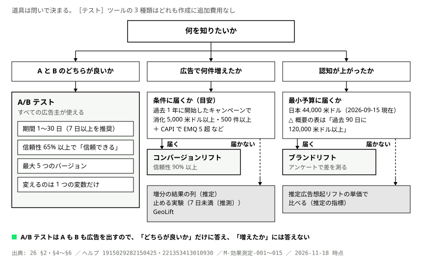
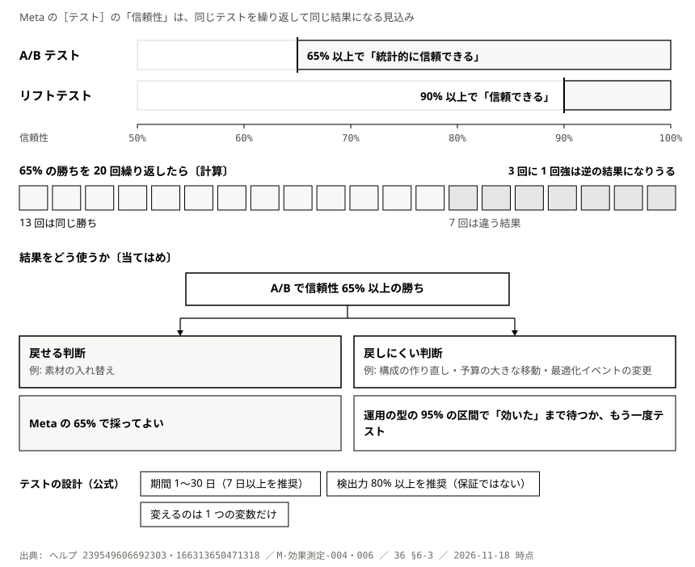

[ Meta / 26 ]
26効果測定の実務
位置づけ: 00_全体像.md §9-5 の各論。Google の知識ベースの ../Google広告の基礎/26_効果測定の実務.md（以下 G26）に当たる。G26 と同じく「この施策は効いたのか」「この数字で何が言えるか」に答える手順書。計測の仕組み（ピクセル・CAPI・アトリビューションの窓）は 06 に書いたので繰り返さない
このメモについて
- 確認日: 2026-11-18（Meta ビジネスヘルプセンターの日本語の本文を Claude のアプリ内のブラウザで読んだ〔テスト・A/B テスト・コンバージョンリフト・ブランドリフト・信頼性・増分〕。開発者向け文書〔Lift Study・Split Testing〕、Meta のオープンソース〔Robyn・GeoLift〕の文書を WebFetch で取得。出典は末尾に、初版の番号 S-xx…
- 位置づけ:
00_全体像.md§9-5 の各論。Google の知識ベースの../Google広告の基礎/26_効果測定の実務.md（以下 G26）に当たる。G26 と同じく「この施策は効いたのか」「この数字で何が言えるか」に答える手順書。計測の仕組み（ピクセル・CAPI・アトリビューションの窓）は06に書いたので繰り返さない - 使い方: まず §2 の表で問いの種類を決め、該当する節を読む。確認日から 30 日を過ぎていたら §5（セルフサービスのコンバージョンリフトの条件）と §6（ブランドリフトの最小予算。ヘルプは「2026-09-15 現在」と日付を付けている）を取り直す
- 凡例: ✓ 公式で確認 ／ △ 資料によって食い違う ／ ? 確認できず
- 主張の出どころの印: 公式Meta のヘルプ・開発者文書・公式発表・Meta のオープンソースの文書 ／〔第三者〕媒体外の解説 ／〔計算〕〔推測〕書き手
地図
本文
0.先に結論（この章で一番効く 8 点）
- 01
Meta の［テスト］ツールには 3 種類ある: A/B テスト（どちらが良いか）、ブランドリフト（認知が増えたか）、コンバージョンリフト（成果が増えたか）。 テストの作成に追加費用はかからない ✓公式本文（B-46）
- 02
A/B テストは「すべての広告主」が使える。 期間は 1〜30 日、7 日以上を推奨。勝ち負けは結果の単価で決め、信頼性 65% 以上で「統計的に信頼できる」とする。推定の検出力（パワー）は 80% 以上を推奨 ✓公式本文（B-46、B-41、B-50）
- 03
A/B テストは増分を測らない。 両方のバージョンとも広告を出している。ホールドアウト（見せない群）付きの A/B テストとホールドアウトテストは2021-04-26 に［テスト］ツールで停止された ✓公式本文（B-51、B-42）
- 04
コンバージョンリフトは、ヘルプでは「セルフサービス」の条件が書かれている: 過去 1 年以内に始めた、消化 5,000 米ドル以上・500 件以上のコンバージョン（クリック 1 日・7 日かビュー 1 日）のキャンペーンがあること（90 日を超えるキャンペーンは案分）。さらに CAPI で EMQ 5 超のイベントを送っているなどのシグナルの品質の条件 ✓公式本文（B-48）。開発者文書は「利用は限られ、担当者に連絡」と書く △（S-31）
- 05
リフトの「統計的に信頼できる」は信頼性 90% 以上 ✓公式本文（B-50）。リフトの結果は広告マネージャの数字と比べてはいけない（数え方が違う）✓公式本文（B-49）
- 06
ブランドリフト（ブランドアンケートテスト）の最小予算は国ごと。日本は 44,000 米ドル（2026-09-15 現在） ✓公式本文（B-54）。ただし［テスト］の概要の表はブランドリフトの要件を「過去 90 日の広告費 120,000 米ドル以上」と書く △（B-46）
- 07
「増分の結果」（インクリメンタルアトリビューションの列）は実験ではなく機械学習の推定。 2025-04-01 以降の期間で見られ、ヘルプの「推定指標」に入っている ✓公式本文（B-03、B-26）
- 08
MMM は Meta のオープンソース「Robyn」（R、Python はベータ）。最低 2 年分の週次データ、説明変数 1 つに観測 10 件を勧め、リフトテストでの較正を強く勧める ✓公式本文（B-56、B-57）。少額・単一媒体の広告主には関係が薄い〔推測〕
1.Google との対比（G26 との対比表）
- 件数の条件は Meta のほうが低い（500 件と 1,000 件）
- GeoLift
- 日本は 44,000 米ドル
- 日本での最小予算は Meta のほうがかなり高い
- 実験しなくても増分の推定値が列で見える
- 最低 2 年の週次データ
Google 側は G26 の記述に合わせた（記憶で書いていない）。
| 観点 | Google 広告（G26） | Meta 広告 | 運用の判断への効き方 |
|---|---|---|---|
| A と B の比較 | カスタムテスト（キャンペーンのテスト）。最低予算・最低件数の決まりなし。安定まで 7〜14 日。既定は 80% の信頼区間（G26 §3.1・§3.2） | A/B テスト。すべての広告主が使える。1〜30 日、7 日以上を推奨。信頼性 65% 以上で「信頼できる」。最大 5 バージョン ✓ 本文（B-46、B-41、B-50、B-45） | Meta の 65% は Google の既定（80%）より緩い。大きな判断（予算の大きな移動）では、65% の勝ちだけで決めない〔推測〕 |
| 増分（ユーザー単位） | コンバージョン リフト（ユーザー単位）。観測コンバージョン 1,000 件以上、予算 5,000 米ドル以上。担当者経由。最短 7 日、14 日超を推奨。ベイズ（G26 §3.3） | コンバージョンリフト。セルフサービスの目安は「過去 1 年で 5,000 米ドル以上・500 件以上のキャンペーン」＋シグナルの品質（CAPI で EMQ 5 超など）✓ 本文（B-48）。統計はベイズ推論のモデルを実測で検証と書く（B-48） | 件数の条件は Meta のほうが低い（500 件と 1,000 件）。金額の目安は同じ 5,000 米ドル。ただし Meta は CAPI と EMQ の条件がある |
| 増分（地域単位） | 地域単位のコンバージョン リフト（1 か国だけのキャンペーン、ベータ）（G26 §3.3） | Meta の管理画面に地域単位のリフトは確認できず ?。Meta はオープンソースの GeoLift を公開（自分で回す）✓ 本文（B-58） | Meta で地域の実験をするなら、GeoLift で自分で設計する |
| 認知の実験 | ブランド リフト。日本は質問 1 つで 10 日間 15,000 米ドル以上。サーチ リフトは 28 日間 15,000 米ドル以上（G26 §3.1） | ブランドリフト（ブランドアンケートテスト）。日本は 44,000 米ドル（2026-09-15 現在）△（概要の表は 90 日 120,000 米ドル）✓ 本文（B-54、B-46） | 日本での最小予算は Meta のほうがかなり高い。中小の広告主には現実的でない。代わりは「推定広告想起リフト」の指標（§6-3） |
| 実験しない増分の推定 | （G26 に該当する管理画面の列は無い） | 「増分の結果」＝インクリメンタルアトリビューションの列。リフトテストで学習・検証したモデルの推定（B-03、S-58 抜粋） | Meta は実験しなくても増分の推定値が列で見える。ただし推定。報告では「推定」と書く |
| 1 キャンペーン 1 調査 | 1 つのキャンペーンは同時に 1 調査（G26 §3.1） | ［テスト］ツールで「すでに別のテストの対象になっているキャンペーン」は A/B テストに使えない ✓ 本文（B-45） | 同じ考え方。重ねない |
| MMM | Meridian（ベイズ、地域データ、実験で較正）。全国 1 本なら媒体 3〜4 にまとめ週次 3 年分（G26 §7） | Robyn（リッジ回帰＋最適化、R）。最低 2 年の週次データ、説明変数 1：観測 10、実験での較正を強く推奨 ✓ 本文（B-56、B-57）。MMM 用の配信データ（mmm 内訳）は 2026-01-12 から非同期ジョブ限定（S-12） | 規模の目安はほぼ同じ（2〜3 年の週次）。どちらも少額・単一媒体には向かない |
| 管理画面の成果と増分の違い | 管理画面の成果は「広告がなくても起きた成果」を含む（G26 §2） | 同じ。Meta は管理画面に「増分の結果」の列と、リフトの結果を別に持つ（B-03、B-49） | 管理画面の CPA ＝ 増分の CPA ではない（両媒体共通） |
Google の常識を持ち込むと間違えるところ（要約）: ①「リフトは担当者がいないと使えない」（Meta のヘルプはセルフサービスの条件を書いている。ただし CAPI と EMQ の条件付き）②「ブランドリフトは 15,000 ドルで回せる」（日本の Meta は 44,000 ドル）③「A/B の勝ちは 80% 以上の区間で」（Meta の基準は 65%）④「増分は実験でしか見られない」（Meta は推定の列がある。ただし推定）⑤「ホールドアウト付きの A/B テスト」（Meta の［テスト］では 2021 年に停止）。
2.まず問いを言い直す（どの道具を使うかは問いで決まる）

「どちらが良いか」は A/B テスト（誰でも使える、1〜30 日、信頼性 65%）、「何件増えたか」はコンバージョンリフト、「認知が上がったか」はブランドリフトで、後の 2 つは予算と件数の条件に届くかで分かれる。少額のアカウントは A/B テストだけが届く前提で、増分は推定の列や止める実験で代える。
出典: M-効果測定-001・M-効果測定-002・M-効果測定-003 ほか 12 件 · 2026-11-18 時点
G26 §1 と同じ考え方。Meta で使える道具に当てはめた。
表で見る（6 行。上の図のもとの表）
| 問いの形 | 例 | 向く道具（Meta） | 節 |
|---|---|---|---|
| A と B のどちらが良いか（両方とも広告を出す） | 素材 A と B、Advantage+ オーディエンスと手動、最適化イベントの違い | A/B テスト（［テスト］か広告マネージャの複製） | §4 |
| 広告を出したことで、出さない場合より何件増えたか | Meta 全体、リターゲティングの増分 | コンバージョンリフト。届かなければ「増分の結果」の列（推定）、GeoLift、止める実験 | §5、§7、§9 |
| 認知・好意が増えたか | 動画で認知が上がったか | ブランドリフト（ブランドアンケートテスト）。届かなければ推定広告想起リフトの指標 | §6 |
| 手柄をどこに配るか | リターゲティングと新規のどちらに手柄があるか | アトリビューション（06 §11）。配分であって増分ではない | 06 |
| 媒体ごとの予算配分 | Meta・Google・テレビの配分 | MMM（Robyn など）を実験で較正 | §8 |
| 期間 A と B で何が変わったか | 先月より落ちた理由 | 前後比較（原因は言えない）。2026-03 の定義変更をまたぐなら注記 | §10 |
- 〔推測〕報告で一番多い失敗は G26 と同じ: A/B テストの結果（どちらが良いか）を、増分（広告がどれだけ増やしたか）の答えとして使うこと。Meta の A/B テストは両方とも広告を出す（B-40）
3.管理画面の成果・増分の結果・リフトの違い

管理画面の成果は窓の中の成果をすべて数え、増分の結果の列はそのうち「広告がなければ起きなかった」と機械学習が推定した分（ヘルプの例では 100 件中 70 件）、コンバージョンリフトは無作為に分けたテスト群とコントロール群の差を実験で測る。報告では 3 つを別の行に書き、リフトの結果を広告マネージャの数字と並べて差を議論しない。
出典: 26§3・M-計測-089・M-効果測定-013 ほか 6 件 · 2026-11-18 時点
- インテント・トゥ・トリート（ITT）
- 報告では 3 つを混ぜない
- 増分の結果の列を見て、標準との差が大きい広告セットから疑う
- 「推定なのに実験の結果のように扱う」危険
| 呼び方 | 中身 | 何が混ざるか | 出典 |
|---|---|---|---|
| 管理画面の成果（標準アトリビューション） | 広告セットの窓（クリック 1・7 日、ビュー 1 日、エンゲージスルー 1 日）の中で起きたコンバージョンをすべて数える | 広告がなくても起きた成果、モデル化されたコンバージョン | ✓ S-57、B-27 |
| 増分の結果（インクリメンタルアトリビューション） | 機械学習モデルが「広告がなければ起きなかった」とみなしたものだけ。例: 100 件中 70 件を増分とみなせば 70 | モデルの誤差（推定指標） | ✓ B-03、B-26 |
| コンバージョンリフトの結果 | 無作為に分けたテスト群とコントロール群（広告を見ない）の差。調査の開始日から終了日まで、両群のコンバージョンをすべて数え、コントロール群をテスト群と同じ規模に調整して増分を計算 | 調査の条件に固有（ほかの期間・設定に一般化できない） | ✓ B-48、B-49 |
- ✓ ヘルプは「コンバージョンリフトテストの結果は、Meta 広告マネージャで広告キャンペーンの結果と比較するためのものではありません。これは、コンバージョンリフトテストで使用したキャンペーンの結果についても当てはまります」と書く（B-49）
- ✓ リフトはインテント・トゥ・トリート（ITT）: テスト群には広告を見る「機会」があり、実際に見た人（露出）と見なかった人（非露出）の両方が入る。広告効果を過大に見積もらないための設計とヘルプは書く（B-48）
- 〔推測〕だから「テスト群のうち実際に見た人だけ」で計算した数字は、リフトの数字より大きくなる。社内で別に計算した値と食い違ったら、ITT かどうかを先に確かめる
運用の判断への効き方
- 報告では 3 つを混ぜない。「管理画面の CPA」「増分の結果の CPA（推定）」「リフトの増分 CPA（実験）」を別の行に書く〔推測〕
- 増分の結果の列を見て、標準との差が大きい広告セットから疑う。差が大きい＝広告がなくても起きた成果を多く取っている可能性。リターゲティング・既存顧客の多い広告セットで起きやすい〔推測〕（G26 §2 の「元から買う人に広告が出る」と同じ構造）
Google との違い
Google は管理画面に増分の推定の列を持たず、増分はリフトか自前の実験でしか見ない（G26 §2・§3）。Meta は推定の列がある分、「推定なのに実験の結果のように扱う」危険が加わる。
4.A/B テスト
- 同じ人が両方のバージョンを見ない
- すでに別のテストの対象のキャンペーン、購入タイプが「予約」のキャンペーンは使えない
- 結果の単価
- すべての広告主が利用可能
- 並行するほかのキャンペーンと同じオーディエンスを使わない
- 1〜30 日で設定。7 日以上を推奨
4-1.仕組みと条件 ✓公式本文（B-40、B-44、B-45、B-46）
- 画像・テキスト・オーディエンス・配置などの変数を変えた 2 つ以上のバージョンを比べる。同じ人が両方のバージョンを見ないようにオーディエンスを分ける
- 作り方: 広告マネージャのツールバーの［A/B テスト］（既存のキャンペーン・広告セットをテンプレートに）、［テスト］ツール（既存のキャンペーンを最大 5 つ比べる、または複製）、既存のキャンペーン・広告セット・広告の複製
- すでに別のテストの対象のキャンペーン、購入タイプが「予約」のキャンペーンは使えない（B-45）
- 既存のキャンペーンを複製すると予算も複製される。公平に比べるため両方に同額の予算を使う（B-40）
- 測り方は結果の単価（またはコンバージョンリフト単価）（B-40）
- 要件: すべての広告主が利用可能、最大 5 バージョン（B-46）
- 開発者文書（API）: 同時に 100 件、1 件 150 セル、1 セル 100 広告まで。クリエイティブテストは 2〜7 セル、各セル 1 広告（S-30）
4-2.ベストプラクティス ✓公式本文（B-41、B-50）

Meta の［テスト］は A/B テストを信頼性 65% 以上、リフトテストを 90% 以上で「統計的に信頼できる」とし、65% は同じテストを繰り返すと 3 回に 1 回強は違う結果になりうる水準（〔計算〕）。素材の入れ替えのような戻せる判断は 65% で採り、構成の作り直しや予算の大きな移動は運用の型の 95% の区間で効いたと言えるまで待つ（〔当てはめ〕）。
出典: M-効果測定-004・M-効果測定-006・M-効果測定-003 ほか 6 件 · 2026-11-18 時点
表で見る（7 行。上の図のもとの表）
| 項目 | Meta の推奨 |
|---|---|
| 変数 | 1 つだけ変える（変数以外は同じ広告セット） |
| 仮説 | 測定できる仮説にする（例: 「ランディングページビューに最適化すると結果の単価が下がる」） |
| オーディエンス | テストに十分な規模。並行するほかのキャンペーンと同じオーディエンスを使わない（重なると配信の問題・結果の質の低下） |
| 期間 | 1〜30 日で設定。7 日以上を推奨。7 日未満では結論に足りないことがある。顧客が広告から 7 日以上かけて買うなら 10 日など長めに |
| 予算 | どちらが良いかを自信を持って判断できるだけの結果が出る予算 |
| 検出力 | 推定パワー 80% 以上を推奨（保証ではない） |
| 結論の基準 | 信頼性 65% 以上で統計的に信頼できる（A/B テスト） |
4-3.結果の読み方 ✓公式本文（B-42、B-43）
- 勝ち（パフォーマンスの高いキャンペーン）は、各キャンペーンの結果の単価を比べて決める。Meta はテスト中の行動から起こりうる成果を何万回もシミュレーションし、勝つ頻度から「同じテストを繰り返して同じ結果になる見込み」を計算する（B-42）
- 勝ったほうの単価が高く見える場合の理由としてヘルプが挙げるのは、期間が短すぎた、十分な結果が無かった、期間のベストプラクティスに従わなかった（B-42）
- 明らかな勝ちが無いときは、上位で別の指標で単価が低いバージョンが示される。勝ちが見つからないときは、可能なら次の手（例: 期間の延長）を示す（B-43）
- 結果には年齢・性別のチャートも付く（B-43）
- ? 初版 00 §9-5 の「75% 未満なら延長を勧める」（抜粋）は、今回読んだ本文には見当たらなかった。今の公式の数値は「65% 以上で信頼できる」（B-50）
4-4.運用の判断への効き方
ヘルプは名指しで勧めない（配信が非効率、オーディエンスが重なり結果の信頼性が下がる）（B-40）
（すべての広告主）。ただし件数が少ないと 65% に届かない。最適化イベントを件数の多いもの（リンクのクリック・ランディングページビュー）にした A/B は早く結論が出るが、問いが変わる〔推測〕（「クリックの単価」で勝った素材が「購入の単価」でも勝つとは限らない）
〔計算〕65% の勝ちは「3 回に 1 回強は逆の結果になりうる」水準。素材の入れ替え程度の小さな判断なら十分、予算の大きな移動や構成の作り直しなら、期間を延ばすか、もう一度テストする〔推測〕
Advantage+ の自動化（Advantage+ クリエイティブの自動加工など）がバージョンごとに別の動きをすると、変数が 1 つでなくなる〔推測〕。比べたい部品以外の自動化は両方で同じ設定にそろえる
大きな編集は学習のやり直しを起こす（00 §6-2）〔推測〕（G26 §3.2 の「テスト中の変更は解釈を難しくする」と同じ）
4-5.Google との違い
| 観点 | Google（G26 §3.2） | Meta |
|---|---|---|
| 分割 | 検索は Cookie ベースか検索ベース | オーディエンスを重ならないように分割（人単位） |
| 結論の基準 | 既定 80% の信頼区間。大きな判断には 95% に変える〔G26 の推測〕 | 65% 以上で信頼できる（固定の説明） |
| 期間 | 安定まで 7〜14 日。推奨期間はヘルプで食い違い | 1〜30 日、7 日以上を推奨 |
| 予算 | 50/50 は費用の半々を保証しない（G26 §3.2） | 同額の予算を使う（B-40） |
| 自動反映 | 既定でオンのテストがある | ? 公式本文に記載なし（勝ちが出るとお知らせとメール。B-42） |
5.コンバージョンリフト
- テスト群とホールドアウト（コントロール）群に無作為に分ける
- CAPI がおすすめ
- ベイズ推論モデル
- 過去 1 年以内に始めた、消化 5,000 米ドル以上
- クリック 1 日・クリック 7 日・ビュー 1 日のアトリビューション設定で 500 件以上
- CAPI を導入し、EMQ が 5 を超えるイベントを送っている
5-1.仕組み ✓公式本文（B-47、B-48）
- 1
目的とキャンペーンを選ぶ
- 2
キャンペーンのオーディエンスを、Meta がテスト群とホールドアウト（コントロール）群に無作為に分ける。割り付けは期間中ずっと同じ
- 3
テスト群には広告を見る機会があり、コントロール群には意図的に広告を見せない
- 4
両群の行動（購入など）を測る
- 5
両群を比べ、リフトと信頼区間を出す
- 対象の目的: 「売上」「リード」「エンゲージメント」（B-47）
- コンバージョンの共有のしかた: ピクセル、CAPI（アプリ・ウェブ・オフライン）、SDK のアプリイベント、オフラインコンバージョンのアップロード。CAPI がおすすめ。CAPI では EMQ が高いほどリフトの効果が高くなりうる（B-48）
- 検証: 入力データの集計・マッチングを実測で検証、ベイズ推論モデルを実測に照らして検証、異常の監視（B-48）
- リフトのイベントの遅延: 推奨 7 日以内、最大 90 日以内（B-18。
06§6-4）
5-2.使える条件 ✓公式本文（B-48、B-46）／△（S-31）
| 条件 | 内容 |
|---|---|
| キャンペーンの実績（目安） | 過去 1 年以内に始めた、消化 5,000 米ドル以上のキャンペーンが広告アカウントにある |
| 件数（目安） | そのキャンペーンが、クリック 1 日・クリック 7 日・ビュー 1 日のアトリビューション設定で 500 件以上のコンバージョン |
| 長いキャンペーン | 90 日を超えるものは案分（例: 180 日なら 10,000 米ドルと 1,000 件） |
| シグナルの品質（セルフサービス） | 次のどちらか: ①CAPI を導入し、EMQ が 5 を超えるイベントを送っている ②対応するデータソースでロウファネルのイベントかモバイルアプリのインストール（MAI）を送っている（ePrivacy 指令の影響を受ける国を主に狙う広告主は②を使えない） |
| ［テスト］の概要の表の要件 | 「コンバージョン API など、質の高いコンバージョンのデータソースが 1 つ以上ある」（B-46） |
| 複数のバージョン | Meta のアカウント担当者と連携している場合に対応（B-46） |
- △ 開発者文書（Marketing API の Lift Study）は「コンバージョンリフト測定は現在限られている。利用は Meta の担当者に問い合わせ」と書く（S-31）。ヘルプは「セルフサービスのコンバージョンリフト」の条件を具体的に書く（B-48）。API で作る場合は担当者経由、［テスト］ツールで作る場合はセルフサービスの条件、と読むのが両立する読み方〔推測〕
- ✓ 開発者文書（API）: 開始後に
start_time・割合・目的を変えられない、関連するキャンペーンを外せない。終了前なら終了時刻を延ばせる。内訳の結果は両群合わせて 100 件以上のコンバージョンが要る。結果の項目は増分コンバージョン（上下限つき）、増分の割合、増分あたりの単価（CPiC）、信頼度（S-31、B-59）
5-3.結果の読み方 ✓公式本文（B-50、B-49）
- リフトテストは信頼性 90% 以上で統計的に信頼できる（B-50）
- 推定パワー 80% 以上を推奨（B-50）
- リフトの結果は広告マネージャの結果と比べない（窓が違う。両群のすべてのコンバージョンを数える。コントロール群をテスト群の規模に調整する）（B-49）
- ヘルプが挙げるリフトで答えられる問い: Meta 広告のパフォーマンスは良好か、予算を増やすべきか、どう最適化するか、Meta 広告がもたらしているコンバージョン数、今のアトリビューションモデルは対照テストの結果に合っているか（B-48）
5-4.運用の判断への効き方
〔推測〕。リフトの増分 ÷ 同じ期間の管理画面の成果 で「管理画面の何割が増分か」が分かり、以後の目標単価の置き方に使える（G26 §9.4「増分を踏まえた目標単価」と同じ考え方）
（B-48 のシグナルの品質の条件）。計測（06）を先に直す
（G26 §13-1 と同じ）。§7・§9・§10 で代える
〔推測〕（ブランドリフトのヘルプの注意〔B-52〕と同じ理由: コントロール群が別のキャンペーンの広告を見ると結果が損なわれる）
（B-10 は CAPI のオフラインの利点に「リフト調査を実施して、Meta 広告が店舗での購入に与えた影響を把握」を挙げる）
5-5.Google との違い
| 観点 | Google（G26 §3.3） | Meta |
|---|---|---|
| 最低条件 | 観測コンバージョン 1,000 件以上、予算 5,000 米ドル以上、担当者経由 | 過去 1 年のキャンペーンで 5,000 米ドル・500 件（目安）、CAPI で EMQ 5 超など（セルフサービス） |
| 統計 | ベイズ。「増分がある確からしさ 90%」、80% の信用区間 | ベイズ推論モデル（B-48）。信頼性 90% 以上で信頼できる（B-50） |
| 結果の出始め | 4 日目から（最大 10 日の遅れ） | ? 公式本文に記載なし |
| 期間 | 最短 7 日、14 日超を推奨 | ? ヘルプ本文に最短期間の記載なし |
| 地域単位 | 地域単位のコンバージョン リフト（ベータ） | 管理画面では確認できず ?。GeoLift（オープンソース） |
| 併用の制限 | 1 キャンペーン 1 調査。ブランド リフト等と併用ならホールドアウト 30% 固定 | ［テスト］で別のテストの対象のキャンペーンは使えない（A/B の場合。B-45） |
6.ブランドリフト・ブランドアンケート・推定広告想起リフト
- アンケート
- 同じブランド・商品で別のキャンペーンを Meta で展開しているなら使わない
- ブランドアンケートテスト
- 2026-09-15 現在の額
- （日本語）|
- 過去 90 日間の広告費用が 120,000 米ドル以上
6-1.ブランドリフト（ブランドアンケートテスト）✓公式本文（B-52、B-53）
- 選んだオーディエンスからテスト群とコントロール群を作り、両群にアンケート（広告想起、ブランドの認知、メッセージの関連など）をして差を計算する
- 使える場面（ヘルプの列挙）: 1 つのブランド・商品でキャンペーンを 1 つだけ展開している／期間中にクリエイティブと予算を変えない。テスト用の広告セットの掲載期間は、テスト期間に完全に含めるか、完全に外す
- 同じブランド・商品で別のキャンペーンを Meta で展開しているなら使わない（ホールドアウト群がほかのキャンペーンの広告を見て結果が損なわれる）
- 2 つの入り口: ①Meta のアカウント担当者と組む（テストは無料、要件は担当者が地域に基づいて示す）②ブランドアンケートテスト（［テスト］ツールで自分で設定）
- ブランドアンケートテストは「コンバージョンイベントを直接測定できない場合に便利」とヘルプは書く。キャンペーン単位か、広告アカウントのすべての広告を対象にできる
6-2.最小予算 ✓公式本文（B-54）／△（B-46）
- 最小予算は Meta の分析で国ごとに決める（統計的に有意な結果に要る回答数から）。対象国が複数なら一番高い国の額
- 1 つのキャンペーンが最小予算を満たせば 1 つのテスト。広告アカウント全体の消化が満たせば、アカウントの全広告で 1 つのテスト
- 2026-09-15 現在の額（抜粋。単位は米ドル）:
| 国 | 最小予算 |
|---|---|
| 日本（日本語） | 44,000 |
| 韓国 | 58,000 |
| 香港 | 58,000 |
| 台湾 | 36,000 |
| シンガポール | 36,000 |
| オーストラリア | 80,000 |
| 米国 | 175,000 |
| ドイツ | 110,000 |
- △ ［テスト］の概要の表は、ブランドリフトの要件を「過去 90 日間の広告費用が 120,000 米ドル以上」と書く（B-46）。国別の表（B-54）とどちらが優先するのか、両方要るのかは書かれていない ?。〔推測〕概要の表はアカウント全体の利用資格、国別の表はテスト 1 回あたりの予算、と読めるが確かめていない
6-3.推定広告想起リフト（実験でない代わり）✓公式本文（B-55、B-26）
- 「認知」の目的で広告想起リフトに最適化したキャンペーンでは、推定広告想起リフト（人）と広告想起リフトの単価の指標を見られる
- 使い方の例（ヘルプ）: 2 つのクリエイティブを別々の広告セットで同時に出し、同じ幅広いターゲットで、予算を考慮して広告想起リフトの単価を比べる。オーディエンスの違いも同じ形で比べる
- 「推定広告想起リフト」はヘルプの「推定指標」の一覧に入っている（実測でなく、類似キャンペーンのデータや反応などからのモデリング）（B-26）
6-4.運用の判断への効き方
〔推測〕（44,000 米ドル＝1 テストあたり数百万円規模〔計算〕。為替で変わる）
〔推測〕。推定なので絶対値（何人が覚えたか）は報告に使わず、A と B の比較の目安に留める
（B-52）
6-5.Google との違い
Google の日本のブランド リフトは質問 1 つで 10 日間 15,000 米ドル以上、サーチ リフトは 28 日間 15,000 米ドル以上（G26 §3.1）。Meta の日本の最小予算（44,000 米ドル）は約 3 倍。Meta にはサーチ リフト（指名検索の増加）に当たる実験は無い ?（確認できた範囲で）。
7.増分の結果（インクリメンタルアトリビューション）を効果測定に使う
- 機械学習モデル
- 2025-04-01 より前の期間は出ない
- 同じモデルどうし
- 推定指標
- どれが相対的に増分を多く生んでいそうか
- 少額のアカウントにとって、いちばん手軽な「増分の目安」
7-1.公式に分かっていること ✓公式本文（B-01〜B-03、B-26、B-37、S-40）
- インクリメンタルアトリビューションは「広告がコンバージョンの要因になったか」を予測する機械学習モデルで増分のコンバージョンに最適化・報告する（B-01）
- モデルをインクリメンタルにしていない広告セットでも、［アトリビューションモデルを比較］でインクリメンタルの列を見られる。2025-04-01 より前の期間は出ない（B-03）
- 「この列は… Meta キャンペーン間の相対的なインクリメンタリティの理解に役立てることを目的」とヘルプは書く。比べるのは同じモデルどうしを推奨（B-03）
- 「増分結果」は推定指標（B-26）
- 抜粋（S-58、初版）: 過去のリフトテストで学習・検証した統計モデルによる推定で「開発中」の指標
- Meta の自己申告: 試した広告主で増分コンバージョンが平均 46% 多い（2025-06-04、B-37）、2025 年第 4 四半期のモデル更新で標準より 24% 多い（2026-01-28、S-40）
7-2.何が言えて何が言えないか
| 言えること | 言えないこと |
|---|---|
| Meta のキャンペーン・広告セットの間で、どれが相対的に増分を多く生んでいそうか（ヘルプの目的どおり）〔公式の目的 B-03〕 | 「Meta 全体で何件増えたか」の確かな値（推定指標。実験ではない）〔推測〕 |
| 標準の結果との差が大きい広告セット＝広告がなくても起きた成果を多く取っていそうなところ〔推測〕 | 他媒体との比較（Google の数字とは定義が違う）〔推測〕 |
| 2025-04-01 以降の期間の推移 | それより前との比較（B-03） |
7-3.運用の判断への効き方
〔推測〕。実験の条件（5,000 ドル・500 件）に届かなくても列は見られる（B-03 に条件の記載は無い ?）
標準の CPA で 1 位でも、インクリメンタルの CPA で下位なら、その広告セットは既存顧客を刈っているだけの疑い〔推測〕
（B-26 の「推定指標」）
7-4.Google との違い
Google の知識ベースには、管理画面で増分を推定する列の記述が無い（G26）。Google で増分を見るにはコンバージョン リフトか自前の実験（G26 §3・§4）。Meta は推定の列で常時見られるが、その分、実験との区別を報告で明示する必要がある。
8.マーケティング・ミックス・モデリング（MMM）
- Robyn
- 最低 2 年分の週次の過去データ
- 説明変数 1 つに観測 10 件
- 実験での較正を強く推奨
- MMM 用の Meta のデータ
- 2026-01-12 から非同期のジョブ限定
8-1.Meta の公式の扱い ✓公式本文（B-56、B-57、S-12）／抜粋
- Robyn: Meta の Marketing Science が作ったオープンソースの MMM のパッケージ。「実験的」「半自動」と自ら書く。R で書かれ、Python の API（ベータ、2023-11-22 初公開。R の Robyn を先に入れる必要がある）がある。MIT ライセンス（B-57）
- 手法: リッジ回帰、ハイパーパラメーターの多目的の進化的最適化、勾配に基づく予算配分（B-57）
- データの要件（Robyn の分析者向けガイド）（B-56）:
- 頑健な結果には最低 2 年分の週次の過去データ。月次しか無ければ 4〜5 年が理想
- 週次が最善。日次も可だが追加の検証が要る
- 説明変数 1 つに観測 10 件を推奨（行数は列数の 7〜10 倍、10 倍を超えないことを推奨）
- 媒体の入力は、できれば費用より露出（インプレッション・GRP）
- 実験での較正を強く推奨: 「真の値」とみなせる実験・因果の結果（Meta のコンバージョンリフト〔人単位〕、GeoLift〔地域単位〕）で MMM を較正する。増分の調査を継続的・定期的に回す。Robyn が受け付けるのは点推定だけ（開始日・終了日・増分の値）。信頼度の低いテスト結果は使わない。テストの粒度・指標・期間をモデルとそろえる（B-56）
- 注意（B-56）: 「ゴミを入れればゴミが出る」。変数の入れすぎはノイズ。人の判断（パラメーターの調整と解釈）が要る。予算配分の道具の予測が事業の期待どおりになる保証は無い
- MMM 用の Meta のデータ: Insights API に MMM 用の内訳
mmmがある。2026-01-12 から非同期のジョブ限定（S-12） - 抜粋: Meta には MMM の「Preferred Partner Program」があり、パートナーの手法を Meta の Marketing Science が確かめる。MMM 用のインプレッション・費用のフィードは、バッジ付きのパートナーはセルフサービスで、それ以外（社内のモデラーなど）は Meta の担当者経由（検索結果の要約。本文は未読。古い情報の可能性）〔公式・抜粋〕
8-2.何が言えて何が言えないか
| 言えること | 言えないこと |
|---|---|
| 媒体ごとの売上への寄与と ROI の推定、次の 1 円をどこに置くか（B-56 の例） | キャンペーン・広告セット単位の判断〔推測〕（G26 §7 の Meridian も媒体単位を勧める） |
| 価格・競合・販促の影響（説明変数に入れれば）（B-56） | 実験なしの因果（B-56 は実験での較正を強く勧める） |
| — | すべての問い（B-56 は「MMM がすべての問いに最適とは限らない」と書く） |
8-3.運用の判断への効き方
- 意味が出るのは「複数の媒体」「週次で 2 年以上」「媒体ごとの出稿量に十分な上下」がそろったとき〔推測〕（B-56 の要件と G26 §7 の結論を合わせた判断）。Meta 1 本、または Meta と Google の 2 本で月数十万円規模の広告主には関係が薄い
- MMM を作るなら、Meta のコンバージョンリフトか GeoLift の結果を較正に使う前提で計画する（B-56）
- 自分で作るなら Robyn（R）、Google の Meridian との比較は G26 §7。どちらも「実験で較正」が共通の勧め
- API で Meta の MMM 用データを取る仕組みは、2026-01-12 以降の非同期ジョブに合わせる（S-12）
8-4.Google との違い
| 観点 | Google（G26 §7） | Meta |
|---|---|---|
| 道具 | Meridian（ベイズ） | Robyn（リッジ回帰＋進化的最適化。実験的） |
| データの量 | 「地域 × 時点」。全国 1 本なら媒体 3〜4 にまとめ週次 3 年が最低線（G26 の推測） | 週次 2 年が最低、説明変数 1：観測 10（B-56） |
| 地域 | 地域モデルを勧める | ? Robyn の地域モデルは今回の取得範囲に無い |
| 較正 | 実験で較正（Think with Google の例） | コンバージョンリフト・GeoLift で較正を強く推奨（B-56） |
9.自分で行う実験（GeoLift・止める実験）
- 介入前の期間が 25 以上、地域の単位が 20 以上
- 日次なら最低 15 日、週次なら最低 4〜6 週
- 日本で地域実験をするなら、都道府県（47）か、それを束ねた地域で 20 単位以上
- Meta の配信を地域で止める（または足す）には、広告セットの地域の指定を使う
- 成果は台帳（申込み・売上）を地域別に集計する
- Meta 特有の注意
9-1.GeoLift（Meta のオープンソースの地域実験）✓公式本文（B-58）／抜粋
- Meta が公開する地域単位のリフトの道具（文書の著作権表示は Meta Platforms）
- ベストプラクティス（B-58）:
- 介入前の期間が 25 以上、地域の単位が 20 以上
- 期間は日次なら最低 15 日、週次なら最低 4〜6 週。少なくとも商品の購入サイクル 1 回分
- 日次のデータを週次より強く推奨
- テスト地域とコントロール地域は、同じ成果の指標で合わせる
- 抜粋:
GeoLiftMarketSelection()が候補の地域の組ごとに、最小の検出可能な効果と、成功に要る最小の投資額を示す（検索結果の要約）
9-2.運用の判断への効き方
〔推測〕（B-58 の 20 以上から）。介入前 25 期間＝日次なら約 1 か月、週次なら約半年〔計算〕
〔推測〕。Advantage+ オーディエンスでも地域は「守られる制約」（00 §7-1、S-23）なので、地域の分割は守られる
Meta の管理画面の数字ではなく、媒体の外の数字で測るのが地域実験の利点〔推測〕（G26 §4.1 と同じ）
G26 §4（地域を分ける実験の設計、止める実験、差分の差分法、CausalImpact）の手順は、Meta にもそのまま当てはまる〔推測〕
9-3.止める実験（オン・オフ）

広告セットを 7 日以上止めると再開の時点で情報収集期間に入り直すが、7 日未満の停止は大幅な編集の一覧に無い。少額で増分を確かめる止める実験は 7 日未満の停止で行い、台帳の全体の申込みで比べる（〔推測〕、オン 2 週・オフ 2 週の繰り返しは毎回やり直しになる）。
出典: 26§9-3・26§10・M-学習-012 ほか 3 件 · 2026-11-18 時点
〔推測〕少額で一番はっきり分かるのは G26 §5.2 と同じく「止めたら全体の申込みが減ったか」。台帳の全体の申込み数を、止める前後で比べる
止めた期間が 7 日以上だと、再開時に学習がやり直しになる（00 §6-2「7 日以上の停止」は大幅な編集）。オン 2 週・オフ 2 週の繰り返しは、毎回学習のやり直しを伴う〔推測〕
実験は、Meta では「広告セットの停止」でできる。止めた分の申込みが台帳で減らなければ、リターゲティングの増分は小さい〔推測〕
10.少額のアカウントでどうするか
前提: 成果が月に数件〜数十件、日予算が数千円。G26 §5・§13 と同じ。
| やりたいこと | 届くか | 代わりの方法 |
|---|---|---|
| A/B テスト | ✓ 届く（すべての広告主）。ただし 65% に届きにくい | 件数の多いイベントで最適化した A/B は早いが問いが変わる。7 日以上・購入サイクル以上 |
| コンバージョンリフト | ✗ 多くは届かない（5,000 ドル・500 件・CAPI＋EMQ 5 超） | 増分の結果の列（推定）、止める実験、GeoLift（地域が足りれば） |
| ブランドリフト | ✗ 届かない（日本 44,000 ドル） | 推定広告想起リフトの単価で相対比較 |
| MMM | ✗ 意味が薄い（週次 2 年・複数媒体） | 台帳と前後比較（検出できる差を添える） |
少額のアカウントでの注意（G26 §13 を Meta に当てはめた）:
リフト・ブランドリフト・MMM は使えないと割り切る
「どちらが良いか」（A/B）と「増えたか」（増分）を分ける。A/B テストは前者しか答えない（B-40）
前後比較には「検出できる差」を添える。G26 §5.1 の表（週 5 件なら前後 8 週ずつで約 6 割の変化でないと見えない）は媒体を問わず使える〔計算〕
増分の結果の列は「順位」として使う。絶対値は報告に使わない（B-03、B-26）
2026-03 のクリックの定義の変更と、CAPI の導入日をまたぐ比較は注記する（06 §11-4）
止める実験は 7 日未満で〔推測〕（7 日以上の停止は学習のやり直し。00 §6-2）
台帳を真の値に。Meta・Google・GA4 の合計は台帳を超えうる（G26 §2-5）
11.報告での伝え方
- 「管理画面の CPA」と「増分の CPA」を同じ表に並べない
- リフトの結果を広告マネージャの数字と並べて「差」を議論しない
| 言いたいこと | 使える根拠 | 書き方の例〔推測〕 |
|---|---|---|
| 素材 A が B より良い | A/B テスト（信頼性 65% 以上） | 「A/B テストで A の購入単価が B より X% 低く、Meta の信頼性は Y%（Meta の基準は 65% 以上）」 |
| Meta 広告が成果を増やした | コンバージョンリフト（信頼性 90% 以上） | 「リフトテストで増分 N 件（区間 a〜b）、信頼性 Z%。期間と対象のキャンペーンに固有の結果」 |
| どの広告セットが増分を多く生んでいそうか | 増分の結果の列（推定） | 「Meta の推定（インクリメンタルアトリビューション）では…。実験ではない」 |
| 認知が上がった | ブランドリフト（アンケートの差） | 「広告想起が X ポイント上昇（ブランドリフト）」。推定広告想起リフトなら「Meta の推定」 |
| 先月より落ちた | 前後比較 | 「原因は特定できない。検出できる差は ±X%。期間中に〈定義の変更・CAPI の導入〉あり」 |
- 「管理画面の CPA」と「増分の CPA」を同じ表に並べない（別の行に、定義を添えて）〔推測〕
- リフトの結果を広告マネージャの数字と並べて「差」を議論しない（B-49）
12.判断の型
| 問い | まず | 次に |
|---|---|---|
| 「この素材は効いたか」 | A/B テスト（1 変数、7 日以上） | 65% に届かなければ延長か、件数の多いイベントで再テスト（問いが変わることを記録） |
| 「Meta をやめたらどうなるか」 | コンバージョンリフトの条件（5,000 ドル・500 件・CAPI＋EMQ 5 超）を満たすか | 満たさなければ、止める実験（7 日未満の停止の繰り返し、台帳で評価）か GeoLift |
| 「リターゲティングは要るか」 | 増分の結果の列で、リターゲティングの広告セットの標準との差を見る | 差が大きければ、リターゲティングだけ止める実験 |
| 「動画で認知は上がったか」 | ブランドリフトの最小予算（日本 44,000 ドル）に届くか | 届かなければ推定広告想起リフトの単価で素材を比べる |
| 「Meta と Google の予算配分」 | 週次 2 年・複数媒体のデータがあるか | あれば Robyn か Meridian を実験で較正。無ければ台帳と止める実験 |
| 「Meta の数字は盛っているのでは」 | 06 §12 で窓をそろえて比べる | 増分の結果の列、条件を満たせばリフト |
13.よくある思い込みと実際
思い込みMeta の A/B テストで増分が分かる
実際両方とも広告を出す比較。増分はリフト
印と出典: ✓ 本文 B-40、B-46 ／ 効く場面: 報告
思い込みホールドアウト付きの A/B テストを使えばよい
実際［テスト］ツールでは 2021-04-26 に停止
印と出典: ✓ 本文 B-51 ／ 効く場面: 古い手順書
思い込みA/B の勝ちは 95% や 80% で判断する
実際Meta の基準は 65% 以上。リフトは 90% 以上
印と出典: ✓ 本文 B-50 ／ 効く場面: 結果の解釈
思い込みA/B テストは 2 週間以上
実際1〜30 日で設定、7 日以上を推奨
印と出典: ✓ 本文 B-41 ／ 効く場面: 期間の設計
思い込み手動でオン・オフを切り替えれば A/B テストになる
実際ヘルプは略式のテストを勧めない（オーディエンスの重なり）
印と出典: ✓ 本文 B-40 ／ 効く場面: 少額のアカウント
思い込みコンバージョンリフトは担当者がいないと使えない
実際ヘルプはセルフサービスの条件を書く（5,000 ドル・500 件・CAPI＋EMQ 5 超など）。API は担当者経由
印と出典: ✓ 本文 B-48／△ S-31 ／ 効く場面: 増分の検証
思い込みリフトの結果と広告マネージャの結果は近いはず
実際比べるものではない（数え方が違う）
印と出典: ✓ 本文 B-49 ／ 効く場面: 報告
思い込みブランドリフトは Google と同じくらいの予算で回せる
実際日本は 44,000 米ドル（2026-09-15 現在）。概要の表は 90 日 120,000 米ドル
印と出典: ✓ 本文 B-54／△ B-46 ／ 効く場面: 認知の施策
思い込み「増分の結果」は実験の結果
実際機械学習の推定。推定指標
印と出典: ✓ 本文 B-01、B-26 ／ 効く場面: 報告
思い込み増分の結果は昔の期間でも見られる
実際2025-04-01 より前は出ない
印と出典: ✓ 本文 B-03 ／ 効く場面: 前年比
思い込みRobyn は Meta の公式の製品
実際Meta の Marketing Science のオープンソースで「実験的」。サポート付きの製品ではない
印と出典: ✓ 本文 B-57 ／ 効く場面: MMM の選定
思い込みMMM は数か月分で回せる
実際最低 2 年分の週次を推奨
印と出典: ✓ 本文 B-56 ／ 効く場面: MMM の計画
思い込み止める実験は何日でもよい
実際Meta では 7 日以上の停止は学習のやり直し
印と出典: ✓ 本文（00 §6-2）＋〔推測〕 ／ 効く場面: 少額の検証
14.取得できなかった・確認できなかった項目 ?
| 項目 | 状況 | 次にすること |
|---|---|---|
| コンバージョンリフトの最短期間・結果が出始める日 | ヘルプ本文・開発者文書に記載なし | ［テスト］ツールの作成画面 |
| ブランドリフトの要件の 2 つの書き方（国別 44,000 ドルと、90 日 120,000 ドル）の関係 | 両方とも本文で確認したが関係の説明が無い △ | Meta の担当者、ブランドアンケートテストの作成画面 |
| A/B テストの勝ちを自動で反映するか | 公式本文に記載なし | ヘルプ「A/B テストを編集またはキャンセルする」（286876155019610） |
| A/B テストの「75% 未満なら延長を勧める」（初版の抜粋） | 今回の本文では見当たらず | 「A/B テストの改善のアドバイス」（135668260430624） |
| 増分の結果（インクリメンタルの列）を見る条件（件数・予算の下限） | ヘルプに記載なし | 管理画面 |
| 「増分効果」のヘルプ（258047838115232） | business/help の同じ番号は題名だけで本文が空、adsmanagerbuiltin の URL は 404 | 別の経路 |
| 地域単位のリフトが Meta の管理画面にあるか | 確認できず | Meta の担当者 |
| MMM の Preferred Partner Program と MMM 用フィードの今の条件 | 検索結果の要約だけ（古い可能性） | Meta の Measurement Partner のサイトの本文 |
| Robyn の最新版と保守の状況 | GitHub の取得でリリースの表示が空 | Robyn の CRAN・リリースのページ |
| サーチ リフト（指名検索の増加）に当たる Meta の実験 | 見当たらず | — |
| 「予算の最適化テスト」（299600627522144）の中身 | 題名だけ | ヘルプの本文 |
出典一覧
確認日はすべて 2026-11-18。S-xx は 95_出どころ一覧.md の番号。B-xx はこの章（と 06）で新しく使った出典の仮の番号（B-01〜B-38 は 06 の出典一覧に詳細。95 への追加は担当 A）。「本文（ブラウザ）」＝Claude のアプリ内のブラウザで日本語のヘルプ本文を読んだ。
初版の番号で引いたもの
- S-12 Ads Insights API metric availability updates（2025-10-16）— https://developers.facebook.com/blog/post/2025/10/16/ads-insights-api-metric-availability-updates/ （本文。MMM の内訳の非同期化を今回再確認）
- S-23 Advantage+ audience — https://developers.facebook.com/documentation/ads-commerce/marketing-api/audiences/reference/targeting-expansion/advantage-audience.md
- S-30 Split Testing — https://developers.facebook.com/documentation/ads-commerce/marketing-api/guides/split-testing.md （今回も本文で再確認。B-60 と同じ）
- S-31 Lift Study — https://developers.facebook.com/documentation/ads-commerce/marketing-api/guides/lift-studies.md （今回も本文で再確認。B-59 と同じ）
- S-40 2026: AI Drives Performance（2026-01-28）— https://about.fb.com/news/2026/01/2026-ai-drives-performance/
- S-57 アトリビューションモデルとアトリビューション設定について — https://www.facebook.com/business/help/460276478298895
- S-58 Incremental results — https://www.facebook.com/help/adsmanagerbuiltin/258047838115232 （抜粋。今回は 404）
06 と共通の番号（詳細は 06 の出典一覧）
B-01・B-02・B-03（インクリメンタルアトリビューション）、B-10（コンバージョン API について）、B-18（推奨遅延時間と最大遅延時間）、B-26（推定指標）、B-27（モデル化されたコンバージョン）、B-37（2025-06-04 の公式発表）
この章で新しく使ったもの
変更の記録
| 日付 | 内容 |
|---|---|
| 2026-11-18 | 初版（担当 B）。日本語ヘルプの本文（テスト・A/B・リフト・ブランドリフト・信頼性）と、開発者文書・Robyn・GeoLift の文書から作成。00 §9-5 の「A/B の信頼度 65% と 75% の食い違い」は、本文で 65%（A/B）・90%（リフト）・パワー 80% を確認（75% は見当たらず ?）。「A/B の期間は 2 週間以上とするページもある」は本文では見当たらず、1〜30 日・7 日以上を確認。「コンバージョンリフトは担当者経由」に、ヘルプのセルフサービスの条件（B-48）を足して △ にした |
[ 元 ] Meta広告の基礎/26_効果測定の実務.md